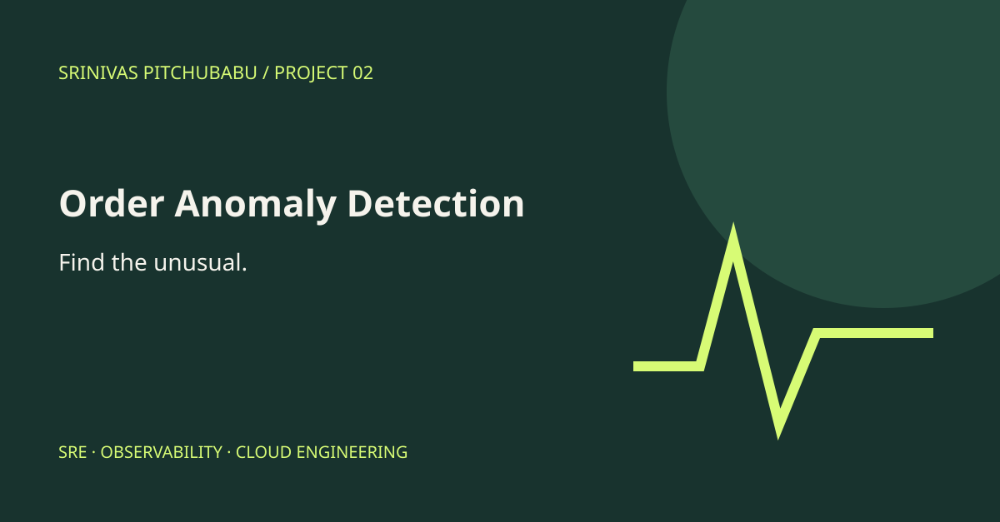

Project 02 / Public showcase plan
Order Anomaly Detection
A showcase of statistical baselines and ensemble approaches to detecting unusual order volumes.

The engineering focus
Explain detection methods using generated order data and clearly distinguish anomalies from confirmed incidents.
Statistical baselines
Anomaly scoring
Reporting
Public version status
Planned. The standalone demonstration and separate project repository have not been published yet. This page describes the intended scope, not a live integration.
Public assets will be independently prepared. No client names, production records, internal addresses, or private screenshots are included.
Explore all projects